Tree
程度★ 難度★★
Tree
「樹」。樹是一種很特別的圖。樹的定義是：任兩點之間都相通，並且沒有環的圖。
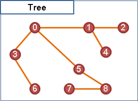樹的定義對初學者來說或許太過抽象。換個說法吧：一棵樹可想做是由一個點開始，藉由許多條邊不斷地延伸拓展到其他點，而且點和邊都不會重複地被拓展到。
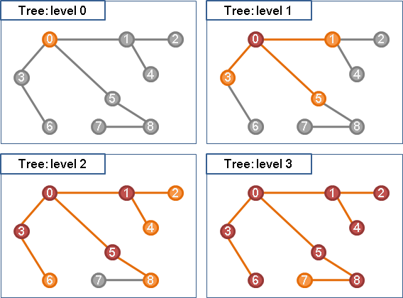Node
「節點」。進行延伸拓展的點、被延伸拓展到的點，稱作「節點」，也就是說樹上的點都是「節點」。
【註：為了方便，以下仍稱呼「點」。】
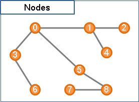Branch
「枝」。延伸拓展所用到的邊稱作「枝」，也就是說樹上的邊都是「枝」。一個點藉由邊往外延伸拓展，稱做「分枝（Branching）」。
【註：為了方便，以下仍稱呼「邊」。】
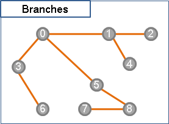Root
「根」。方才提到，一棵樹可想做是由一個點開始分枝──這個點便是「根」。一棵樹上的每一個點都可以作為根。
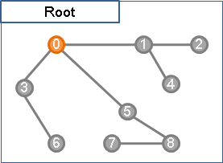Leaf
「葉」。在一棵樹上選定根後，由根開始不斷分枝，途中所有無法繼續分枝的點皆是「葉」。
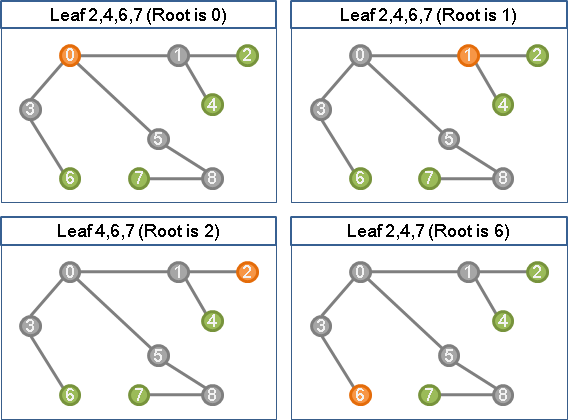另一種說法是：除了根以外，只連著一條邊的點就是葉。但這種說法有個例外：如果樹上總共只有一個點，那麼此點既是根、也是葉。
Level
「層」。在一棵樹上選定根後，按照拓展的順序（也就是按照每個點離根的距離），可以將樹上的點分層次，使得樹上每一個點都擁有一個層數。如果改變根，那麼分層的結果就會不同。
還有另一種比較少見的分層方式，是設定所有葉在同一層，並由葉開始計算層數。
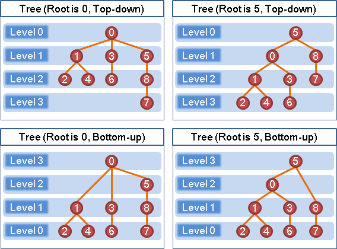Parent & Child
「父親」與「小孩」。在一棵樹上選定根後，以邊相連的任兩點，靠近樹根者相對地稱作「父親」，靠近樹葉者相對地稱作「小孩」。
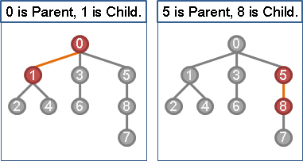一個點的父親，是指與其相鄰的點當中，較此點靠近樹根者，為其父親。父親只會有一個，特例是：樹根沒有父親。
一個點的小孩，是指與其相鄰的點當中，較此點靠近樹葉者，為其小孩。小孩可以是任意多個，特例是：樹葉沒有小孩。
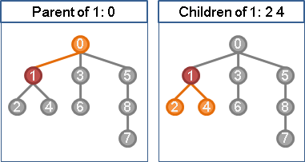Ancestor & Descendant
「祖先」與「子孫」。在一棵樹上選定根後，一個點的父親、父親的父親、……皆是此點的「祖先」。一個點的小孩、小孩的小孩、……皆是此點的「子孫」。
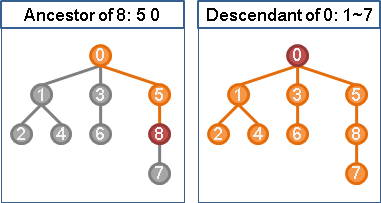Directed Tree
在一棵樹上選定樹根後，可以把邊的方向設定成分枝的方向、遠離樹根的方向；也可以把邊的方向設定成朝向樹根的方向，但是這種情況比較少。
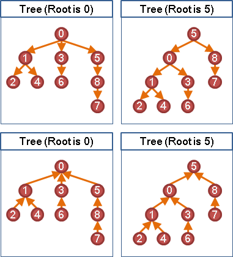Weight
一棵樹可以有權重。當邊擁有權重時，一棵樹的權重等於樹上所有邊的權重總和。
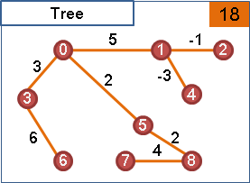Forest
「森林」。很多棵樹稱作一叢「森林」。
Tree資料結構
程度★ 難度★★
圖的資料結構
樹是圖，圖的資料結構就能儲存樹，例如adjacency matrix或adjacency lists。
一棵樹剛好是V個點與V-1條邊，所以adjacency lists的空間複雜度是O(V)。
自行設計節點
陣列（有向樹，邊朝向樹根）
建立一條int陣列，每個格子對應圖上的各個點，格子裡儲存著該點的父親。
查詢路徑時，只能往根的方向行走，無法往葉的方向行走。
此手法經常用來紀錄DFS Forest和BFS Forest；又由於圖論演算法幾乎都是DFS和BFS的延伸，因此此手法既常用又實用。
Heavy-Light Decomposition
一棵樹切成數條長鏈，是比較進階的資料結構。有興趣的讀者可參考「Heavy-Light Decomposition」。
附帶一提，上述介紹的每一種資料結構，除了用來紀錄一棵樹，也能用來紀錄一叢森林。
Prüfer Code
把一棵樹轉換成獨特的編號。
http://en.wikipedia.org/wiki/Prüfer_sequence
http://www.matrix67.com/blog/archives/682
UVa 10843
Tree
程度★ 難度★★★
樹的特性
1. 樹沒有環。 2. 樹上所有點之間都相連通。 3. 沒有環的圖，就是樹或森林。 沒有環的圖、連通的圖，就是樹。 4. 任意兩點之間只有唯一一條路徑。 5. 在樹上任意添加一條邊，就會產生環。 6. 在樹上任意刪除一條邊，一顆樹就裂成兩棵樹。 7. 邊數等於點數減一。
UVa 615 599
depth
一棵有根樹、每個點的「深度」，就是根到每個點的距離。
由根開始進行BFS或DFS即可。
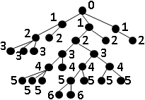遍歷一棵樹與遍歷一張圖，概念上完全相同，實作上則有些微差異：一棵樹，任意兩點之間只有一條路，只要避免走回頭路，就不必紀錄每一點是否已經拜訪過。
height
一棵有根樹的「高度」，就是根到相離最遠的葉的距離。
運用Divide and Conquer，移除一棵樹的樹根，形成許多子樹，並分頭處理子樹。
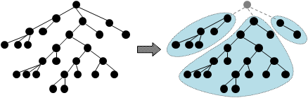寫成程式碼之後，D&C的運作順序，剛好就是DFS的遍歷順序。因此，有人把這樣的程式碼，直接稱為DFS。這用詞並非精準，然而其過程恰是遍歷一張圖，讀取資訊算出答案，故稱之為DFS倒也無妨。
diameter
一棵無根樹的「直徑」，就是相離最遠的兩個點的距離。
稍微修改一下計算高度的程式碼，就可以順便計算直徑。
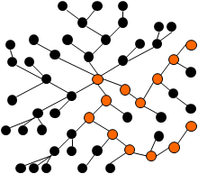一棵樹的各種直徑一定會相交在同一點（同一群點）。
1. 反證法。 現在有兩條分開的直徑， 可是一棵樹上各點都得連通， 所以這兩條分開的直徑，中間一定有某處互相連接， 一旦連接起來，勢必變成更長的直徑，矛盾。 故所有直徑必相交。 2. 反證法。 現在已有兩條直徑相交在某一點， 如果另外一條直徑與這兩條直徑相交在另一點， 勢必變成更長的直徑，矛盾。 故所有直徑必相交在同一點（同一群點）。
UVa 10308 11695
balanced height
想辦法選定一個樹根，讓樹的高度最小。演算法請自行參考程式碼，時間複雜度為兩次DFS的時間。
UVa 10459 10939
parent-child relationship
建立DFS tree或者BFS tree，就可以輕鬆判斷一點是不是另一點的父親。
ancestor-descendant relationship
利用DFS的遍歷順序，就可以輕鬆判斷一點是不是另一點的祖先。
distance between two nodes
樹上任兩點之間只有一條路徑。由其中一點開始進行DFS或BFS，直到遇見另一點，就得到距離了。程式碼就不提供了。
時間複雜度為一次Graph Traversal的時間。
distance from one node to any nodes
由該點開始進行BFS或DFS即可。時間複雜度為一次Graph Traversal的時間。
distance between all arbitrary two nodes
算出所有兩點之間的距離。可以對圖上各點使用Graph Traversal求得，時間複雜度為O(V^2)。
這裡另外介紹稍微複雜一點的方法。先隨便選定一個樹根，然後利用Lowest Common Ancestor將路徑分割成兩條，分頭計算兩條路徑的長度。
這裡提供一個實作方式，時間複雜度為O(V^2)。
1. 樹上隨便挑一點作為樹根。 2. 求所有兩點之間的Lowest Common Ancestor。 3. 求樹根到圖上各點之距離d(‧)。 4. 樹上x點與y點的距離為 (d(x)-d(z)) + (d(y)-d(z))， 其中z點是x點與y點的Lowest Common Ancestor。
再提供另一個實作方式，時間複雜度也是O(V^2)。
1. 樹上隨便挑一點作為樹根。
2. 求所有兩點之間的Lowest Common Ancestor。
3. 以top-down recursive DP計算樹上x點與y點的距離：
d(x,y) =
{ 0 , when x = y
{ w(x, px), d(px, y) , when y is the ancestor of x
{ w(y, py), d(x, py) , when x is the ancestor of y
{ d(x,z) + d(y,z) , otherwise (z is the lca of x and y)
d(x,y)為x點與y點之間的距離
w(x,y)為邊xy的權重。如果邊xy不存在，w(x,y)為無限大。
px為x的父親，py為y的父親。
Directed Acyclic Graph（Under Construction!）
程度★ 難度★★
Directed Acyclic Graph
Source Vertex / Terminal Vertex
Depth
如何決定深度呢？最長路徑。
DP
ICPC 5104
Binary Tree
程度★ 難度★★★
Binary Tree
「二元樹」是計算機科學最重要的概念，甚至可以說：二元樹開創了計算機科學。
像是資料結構Binary Search Tree與Heap，交換式排序演算法的Decision Tree、資料壓縮的Huffman Tree、3D繪圖的BSP Tree、編譯器的Parse Tree……，這一大堆稀奇古怪的術語，通通都是二元樹。總之，二元樹的應用相當廣泛，是資工系學生必學的基礎概念。
「二元樹」與「樹」，儘管名稱相近，但是概念不相近，至於用途更是天差地遠，兩者可以分別獨立學習。二元樹：資料結構課程的二元搜尋樹章節，會順便引出二元樹的概念；樹：演算法課程的圖論章節，一開始就會介紹樹的定義。
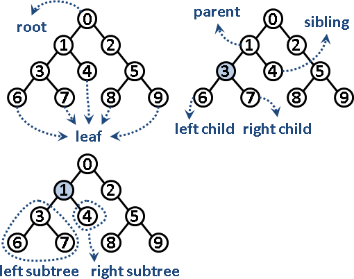言歸正傳。「二元樹」就是分兩岔的樹，每個節點可以有左小孩和右小孩，每個節點可以有零個、一個、兩個小孩。
順便介紹幾個特殊的二元樹：
full binary tree：除了樹葉以外，每個節點都有兩個小孩。
complete binary tree：各層節點全滿。也是full binary tree。
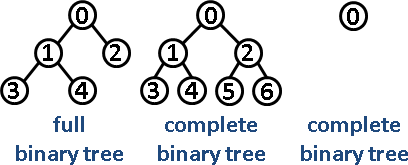Binary Tree資料結構
第一種方法，是建立節點，運用指標串接各個節點。
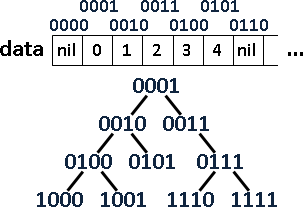第二種方法，是讓二進位數字一一對應到二元樹的節點。
建立一個陣列，運用陣列索引值就能得到各個節點：樹根的索引值固定是一，索引值乘上兩倍就得到左小孩，索引值乘上兩倍再加一就得到右小孩，索引值除以二就得到父親。
優點是程式碼簡潔，效率高。
缺點是浪費記憶體空間。如果不是complete binary tree，那麼陣列就有很多閒置空格。
另一個缺點是樹的高度受限制。1024 = 2^10格的陣列，樹的高度只有10，不能更高了。
UVa 112 122
Binary Tree Traversal
二元樹的遍歷順序，理論上共有四種──但是事實上還是只有DFS與BFS兩種，只不過更動了節點的輸出順序。
注意樹根的位置，就能輕鬆解讀這四種序。
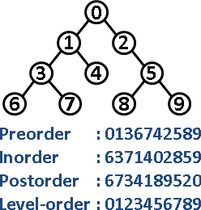Preorder Traversal 前序遍歷 理論上的遍歷順序是：根、左子樹、右子樹。根排在前面。 即是Depth-first Search。 Inorder Traversal 中序遍歷 理論上的遍歷順序是：左子樹、根、右子樹。根排在中間。 實際上是採用Depth-first Search，只不過更動了節點的輸出順序。 Postorder Traversal 後序遍歷 理論上的遍歷順序是：左子樹、右子樹、根。根排在後面。 實際上是採用Depth-first Search，只不過更動了節點的輸出順序。 Level-order Traversal 層序遍歷 即是Breath-first Search。
UVa 112 699
Tree Reconstruction
以一棵二元樹能得到前序、中序、後序、層序，那麼以前序、中序、後序、層序能得到一棵二元樹嗎？
只有一種序，是無法還原出一棵二元樹的，有很多可能性。
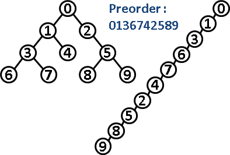有兩種序，就有機會還原出唯一一棵二元樹。比方說，只知道preorder和inorder，求出原本的二元樹。
運用Divide and Conquer可以巧妙解決。在inorder之中，root的兩邊分別為左子樹和右子樹；在preorder之中，最左邊的元素就是root──利用root，便可區分左子樹和右子樹。子樹也是樹，可以用相同手法繼續分割，最後便可求出整棵樹的架構。
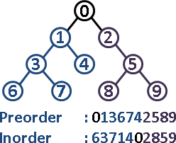但是只有preorder和postorder的話，是做不出答案的。因為無法確定樹根的位置。
那麼levelorder呢？大家就自己想想吧。
UVa 10701 536 548 10410 12347
Polish Notation / Reverse Polish Notation
凡是談到二元樹的前序、中序、後序，總是順便談到四則運算的前序、中序、後序表示法。
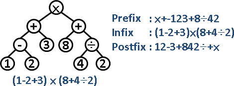我們可以將一道四則運算式子，換成二元樹。
然後列出此二元樹的前序、中序、後序。其中前序就是波蘭表示法，又稱做prefix；中序就是原來的四則運算式子、需要括號，又稱做infix；後序就是逆波蘭表示法，又稱做postfix。
然而，建立二元樹是很麻煩的。能不能略過二元樹，直接把四則運算式子換成波蘭表示法（逆波蘭表示法）呢？當然能！只要運用stack，就可以做到這件事情。
一道四則運算式子，改成波蘭表示法（逆波蘭表示法）之後，計算過程變成由左往右計算，不必顧慮先乘除後加減、不必顧慮括號，只需要一個額外的stack做為輔助。
程式語言的四則運算式子，事實上都會被編譯器轉換成波蘭表示法（逆波蘭表示法），以利電腦計算。
UVa 372 727 11234 172 10700 10847
N-ary Tree
程度★ 難度★
N-ary Tree（k-way Tree）
「多元樹」就是分N岔的樹，每個節點可以有零個、一個、兩個、……、N個小孩。
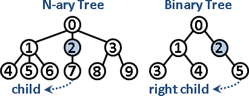注意到：多元樹，節點只有一個小孩時，沒有左小孩、右小孩的差別；二元樹，節點只有一個小孩時，有左小孩、右小孩的差別。
Left Child/Right Sibling Representation
一棵多元樹，可以改用二元樹表示：多元樹的左小孩，是二元樹的左小孩；多元樹的其餘小孩（左小孩的兄弟），是二元樹的右小孩、右右小孩、……。
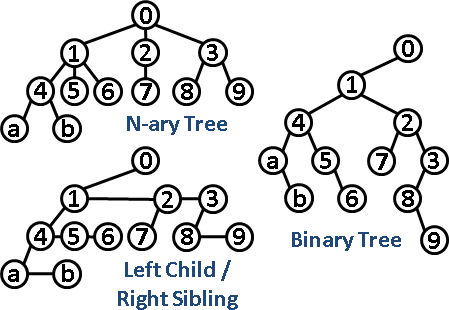芸芸多元樹，皆得簡化成二元樹；區區二元樹，便可描述出多元樹。萬流歸宗、一以貫之。
有興趣的讀者，可以觀察多元樹與轉化過的二元樹的前序、中序、後序、層序。也可以計算一下多元樹的節點數目、樹葉數目、高度。